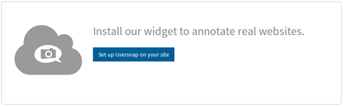

Usersnap a été fondée en 2013 par les deux frères Florian et Gregor Dorfbauer et Josef Trauner. L'idée Usersnap est née des fondateurs travaillant dans le développement d' applications web où ils ont été confrontés à des problèmes de communication. Le produit est issu de l'idée de mieux communiquer avec un outil de communication visuel et de faire du développement web plus efficace. Les trois fondateurs ont commencé à travailler sur leur produit au début de 2012. En 2013 Usersnap a soulevé un investissement de SpeedInvest.
UserSnap est un bug trackeur visuel
Il permet tout simplement aux internautes qui visitent votre site, de remonter des bugs ou de faire part de leurs remarques. L'intégration est simple, c'est un petit bout de code à intégrer dans vos pages web.
Comme il n'est pas toujours simple d'expliquer un bug qu'il soit graphique, technique ou fonctionnel, Usersnap a intégré dans son service un outil de capture d'écran très simple à prendre en main, et faire remonter facilement les commentaires des utilisateurs, même par Monsieur ou Madame tout le monde.
Cela permet d'avoir en permanence un retour sur les éventuels soucis rencontrés par vos internautes et de régler au plus vite ces soucis. Ensuite l'admin peut voir les retours et faire les corrections qui s'imposent.
On peut aussi l'utiliser de manière collaborative avec plusieurs personnes (plusieurs développeurs par exemple) en temps réel et il s'intègre dans pas mal de services tiers comme Slack ou Trello. Top pour du travail d'équipe !
L'autre intérêt de Usersnap par rapport à des solutions concurrentes, ce sont ses API qui permettent de connecter le service avec n'importe lequel de vos outils spécifiques.
Il fonctionne également de façon transparente avec les outils que vous et votre équipe utilisez déjà. Comme Slack, Asana, Zendesk et beaucoup d'autres.
La solution UserSnap, s'adapte également aux différents types de workflows utilisés.
UserSnap, permet également, par le biais d'une extensions navigateur (chrome, firefox) d'être utilisé automatiquement. Il s'uffit de renseigner les liens du site internet concerné et l'extension charge automatiquement le bouton sur la page web. 
Le prix est de 79 € par mois, ce qui est très cher pour un particulier, mais rien du tout pour une société qui a besoin de ces retours pour perfectionner son site. Notez que si vous voulez tester sans dépenser un rond, il y a un essai gratuit de 15 jours qui est proposé. L'inconvénient, c'est qu'il faut absolument que le site soit en ligne pour voir le résultat.